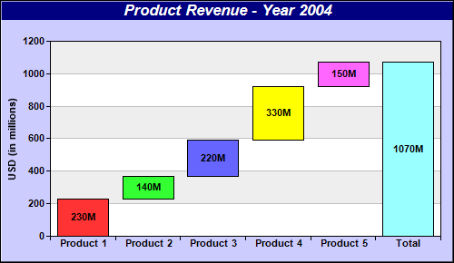

This example demonstrates creating a multi-color waterfall chart.
This chart is created as a multi-color box-whisker layer using
XYChart.addBoxWhiskerLayer2. Only the "box" part of the box-whisker layer is used.
The top-edges of the boxes are obtained by accumulating the raw data using the
ArrayMath utility. The bottom-edges of the boxes are simply the top-edges of previous boxes, with the exception of the last "total" box which always starts at 0.
The following is the command line version of the code in "cppdemo/waterfall". The MFC version of the code is in "mfcdemo/mfcdemo". The Qt Widgets version of the code is in "qtdemo/qtdemo". The QML/Qt Quick version of the code is in "qmldemo/qmldemo".
#include "chartdir.h"
int main(int argc, char *argv[])
{
// 4 data points to represent the cash flow for the Q1 - Q4
double data[] = {230, 140, 220, 330, 150};
const int data_size = (int)(sizeof(data)/sizeof(*data));
// We want to plot a waterfall chart showing the 4 quarters as well as the total
const char* labels[] = {"Product 1", "Product 2", "Product 3", "Product 4", "Product 5", "Total"
};
const int labels_size = (int)(sizeof(labels)/sizeof(*labels));
// The top side of the bars in a waterfall chart is the accumulated data. We use the
// ChartDirector ArrayMath utility to accumulate the data. The "total" is handled by inserting a
// zero point at the end before accumulation (after accumulation it will become the total).
ArrayMath boxTop = ArrayMath(DoubleArray(data, data_size)).insert(0, 1).acc();
// The botom side of the bars is just the top side of the previous bar. So we shifted the top
// side data to obtain the bottom side data.
ArrayMath boxBottom = ArrayMath(boxTop).shift(1, 0);
// The last point (total) is different. Its bottom side is always 0.
boxBottom.trim(0, data_size).insert(0, 1);
// Create a XYChart object of size 500 x 280 pixels. Set background color to light blue
// (ccccff), with 1 pixel 3D border effect.
XYChart* c = new XYChart(500, 290, 0xccccff, 0x000000, 1);
// Add a title to the chart using 13 points Arial Bold Itatic font, with white (ffffff) text on
// a deep blue (0x80) background
c->addTitle("Product Revenue - Year 2004", "Arial Bold Italic", 13, 0xffffff)->setBackground(
0x000080);
// Set the plotarea at (55, 50) and of size 430 x 215 pixels. Use alternative white/grey
// background.
c->setPlotArea(55, 45, 430, 215, 0xffffff, 0xeeeeee);
// Set the labels on the x axis using Arial Bold font
c->xAxis()->setLabels(StringArray(labels, labels_size))->setFontStyle("Arial Bold");
// Set the x-axis ticks and grid lines to be between the bars
c->xAxis()->setTickOffset(0.5);
// Use Arial Bold as the y axis label font
c->yAxis()->setLabelStyle("Arial Bold");
// Add a title to the y axis
c->yAxis()->setTitle("USD (in millions)");
// Add a multi-color box-whisker layer to represent the waterfall bars
BoxWhiskerLayer* layer = c->addBoxWhiskerLayer2(boxTop, boxBottom);
// Put data labels on the bars to show the cash flow using Arial Bold font
layer->setDataLabelFormat("{={top}-{bottom}}M");
layer->setDataLabelStyle("Arial Bold")->setAlignment(Chart::Center);
// Output the chart
c->makeChart("waterfall.png");
//free up resources
delete c;
return 0;
}
© 2023 Advanced Software Engineering Limited. All rights reserved.